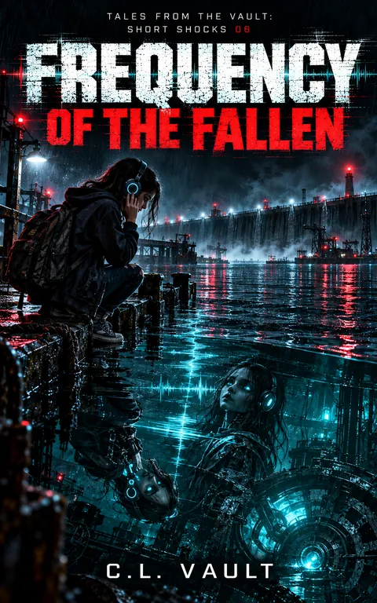

What is on file
THE HARBOR HAS A HEARTBEAT. IT WANTS HERS.
Riley Kade doesn't hear music like other kids.
She hears machines.
Kick drum: piston. Hi-hat: valve. Bassline: conveyor belt. Every song is an engine she can feel turning inside her ribs.
Then, one day on Harbor City's abandoned pier, she hears something answering her headphones.
Read the complete filed description
THUMP. HSSSS.
The sound isn't coming from her music.
It's coming from beneath the harbor.
Following the impossible rhythm, Riley discovers a buried piece of technology carrying the fragmented voice of Sam Hawthorne, a boy the city insists has simply gone missing.
Sam has one warning:
DON'T ACCEPT THE BEAT.
Beneath the docks, an ancient machine called the Clockwork Guardian is waking up. It feeds on sound, movement, and attention. It needs a human operator.
And Harbor City's Coastal Safety Authority has decided Riley is the perfect candidate.
Her phone starts issuing commands. Her body begins moving without permission. Even her own voice starts saying things she never meant to say.
[CONFIRM PRIMARY?][DEFAULT: YES]
But Riley hears something the machine cannot hide.
A tiny hesitation in its perfect rhythm.
A damaged gear. A missing beat. A flaw the system has spent years trying to correct.
And Riley knows something the machines have forgotten.
Real machines have scars.
Frequency of the Fallen is Book 6 of Tales From the Vault: Short Shocks, an interconnected series of darkly funny science-fiction horror stories about impossible technology, sinister systems, and children who refuse to surrender control of their own lives.
Further material may surface.
No connected records are currently listed for this entry. Connections are added only when the archive can support them, and not merely because two stories share a city.
Request filing notices ↗